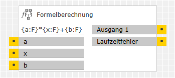
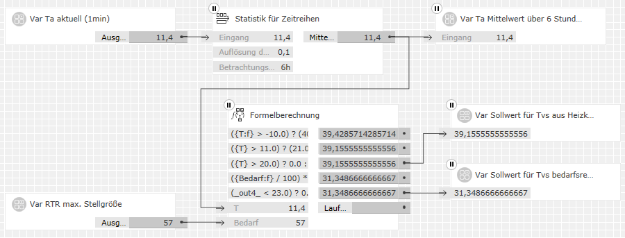
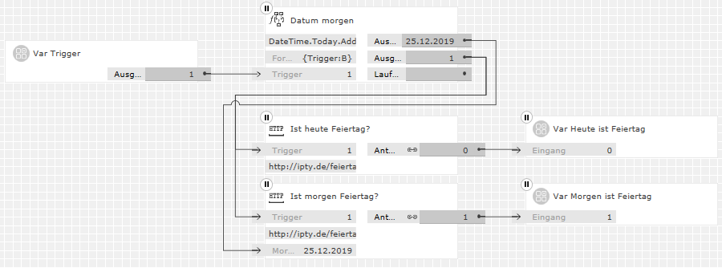

Formelberechnung
Formelberechnung
Beschreibung
Dieser Baustein errechnet aus einer oder mehreren mathematischen Formeln entsprechende Ausgabewerte. Die Formeln sind als Textparameter frei konfigurierbar. Sie bestehen aus Rechenoperationen, Konstanten und Platzhaltern für variable Eingangswerte. Die Platzhalter bestimmen Anzahl, Namen und Porttypen der Eingänge.
Folgende Arten von Eingangswerten können verarbeitet werden:
- Wahrheitswerte (bool)
- Numerische Werte (Ganzzahlen byte, int, long und Fließkommazahlen double)
- Zeichenketten (string)
Implementierung und Lizenzen
Dieser Baustein würde eigentlich thematisch besser ins Paket "Generische Logikbausteine" passen. Aus technischen Gründen – er nutzt dieselbe Platzhalter-Implementierung wie der Textformatierer – muss er aber in diesem Paket ausgeliefert werden.
Die Implementierung verwendet den Mono.CSharp.Evaluator-Service (Version 3.6.1). Dieser steht unter der MIT-Lizenz kostenlos mit Quelltext zur Verfügung.
Eingänge
Die Reihenfolge der Eingänge ergibt sich für jeden Porttyp aus der Reihenfolge der entsprechenden Platzhalter in den Formatvorlagen.
Bezeichnung |
Porttyp |
Beschreibung |
|---|---|---|
|
aus Platzhalter |
Bool |
Werte für Wahrheitswert-Platzhalter |
|
aus Platzhalter |
Integer |
Werte für Ganzzahl-Platzhalter |
|
aus Platzhalter |
Number |
Werte für Fließkommazahl-Platzhalter (auch Prozentwerte) |
|
aus Platzhalter |
Text |
Werte für Zeichenketten-Platzhalter |
Ausgänge
Bezeichnung |
Porttyp |
Beschreibung |
|---|---|---|
|
Ausgang 1 |
je nach entsprechen- |
Alle Ausgänge geben erst dann Werte aus, wenn alle Eingangswerte vorliegen. Wenn mehrere Formeln und Ausgänge verwendet werden, gilt dies auch für Formeln, in denen die fehlenden Werte gar nicht vorkommen. Hinweise:
|
|
Laufzeitfehler |
Text |
Einige Fehler, die in den Formeln auftreten können, werden bereits bei der Validierung festgestellt und im GPA ausgegeben. Viele Fehler lassen sich aber erst beim Berechnen der Ausgangswerte – also zur Laufzeit des Bausteins in der GPA-Simulation oder nach der Inbetriebnahme auf dem Zielgerät – feststellen. Solche Fehler werden an diesem Ausgang als Texte gemeldet.
Beispiel: Der Fehler Hinweis: Die meisten Laufzeit-Fehlermeldungen werden — wie im Beispiel — in englischer Sprache ausgegeben. |
Parameter
Bezeichnung |
Porttyp |
Als Eingang zuschaltbar? |
Beschreibung |
|---|---|---|---|
|
Anzahl der Ausgänge und Formeln |
Integer |
nein |
Dieser Parameter legt die Anzahl der Ausgänge des Bausteins im Bereich 1..10 fest. Da jeder Ausgang seine eigene Formel hat, legt dies auch die Anzahl der Formelparameter fest. |
|
Typ des Ausgangs 1 |
Auswahl |
nein |
Diese Parameter legen fest, welchen Porttyp der entsprechende Ausgangswert jeweils haben soll. Möglich sind die folgenden Typen:
In Klammern ist jeweils der C#-Typ angegeben, wie er in Typumwandlungsoperatoren verwendet werden kann. Das Ergebnis der Formelauswertung muss sich in diesen Typ umwandeln lassen, sonst kann der Ausgang nicht gesetzt werden und es kommt zu einem Laufzeitfehler. |
|
Formel 1 |
Text |
nein |
Diese Parameter legen fest, wie die jeweiligen Ausgangswerte zu berechnen sind. Darin können Operatoren, mathematische Funktionen, Konstanten und Variablen vorkommen. In den nächsten Kapiteln sind alle diese detailliert beschrieben. |
Ausgangswerte als Variablen
Wenn mehrere Formeln und Ausgänge verwendet werden, können die Ausgabewerte von Ausgängen mit niedrigeren Nummern in den Formeln mit höheren Nummern als Variablen verwendet werden. Diese Variablen haben die Namen _out1_ .. _out9_. Sie dürfen überall stehen, wo auch eine Konstante des gleichen Typs stehen dürfte.
Große Formeln (oder solche, in denen Zwischenergebnisse mehrfach verwendet werden) lassen sich so in übersichtliche Teile zerlegen. Wird ein Zwischenergebniss außerhalb der weiteren Formeln nicht benötigt, so kann sein Ausgang unbelegt bleiben.
Das Anwendungsbeispiel "Heizungsregelung" benutzt einen Formelsatz, der dies mehrfach anwendet.
Platzhalter für Variablen
Platzhalter in den Formeln dienen dazu, variable Eingangswerte in den Berechnungen zu verwenden. Sie dürfen überall stehen, wo auch eine Konstante des gleichen Typs stehen dürfte.
Es gibt zwei grundlegende Arten von Platzhaltern:
-
Definition – definiert erstmals einen Eingang
mit Namen und Typ und hat die folgende Form:
{Eingangsname:T} - Referenz – bezieht sich auf einen vorher definierten Eingang. Sie folgen der gleichen Form, wobei :T weg gelassen werden darf.
Eingangsname wird als Bezeichnung des Baustein-Eingangs verwendet. Definitionen legen Eingänge an und setzen deren Werte in die Formel ein. Referenzen beziehen sich auf einen vorher definierten Namen und verwenden den Wert des entsprechenden Eingangs erneut. Sie dürfen sich auch auf Namen beziehen, die in einer anderen Formel mit einer niedrigeren Nummer definiert worden sind. Referenzen dürfen keinen von der Definition abweichenden Datentyp festlegen.
Eingangsname muss mit einem Buchstaben beginnen. Weiter kann er auch Ziffern und '_' enthalten. Leerzeichen und andere Sonderzeichen sind nicht zulässig. Leerzeichen am Anfang oder am Ende sind erlaubt, werden aber nicht in den Namen übernommen.
T ist ein Buchstabe, der den Datentyp des Eingangs
festlegt.
Folgende Buchstaben – Groß- und Kleinbuchstaben haben gleiche
Bedeutung – sind möglich:
- B – Wahrheitswert (bool) – Mögliche Werte: true, false
- I – Ganzzahl (int) – Wertebereich -2,147,483,648 .. 2,147,483,647
- F, N, G oder P – Fließkommazahl (double) – Wertebereich etwa -1,7 × 10308 .. 1,7 × 10308 mit einer Genauigkeit von mindestens 15 geltenden Ziffern
- S – Zeichenkette (string) – ASCII- oder Unicode-Zeichenkette
Hinweis:
Bei numerischen Berechnungen sind die angegebenen Wertebereiche zu beachten.
Werden sie in irgend einem Teil der Formel überschritten, kommt es zu
falschen Ergebnissen.
Literale Konstanten in Formeln
Konstante |
Datentyp |
Beschreibung |
|---|---|---|
|
Zahl |
double |
Zahlen, die ohne Dezimaltrennzeichen angegeben werden, also nur aus Ziffern bestehen, sind Ganzzahlen (int). Dies ist insbesondere beim Dividieren zu beachten (siehe Divisions-Operator). Ganzzahlen können auch in hexadezimaler Schreibweise angegeben werden, indem man ihnen 0x... voran stellt. Fließkommazahlen (double) können auch in Exponentialschreibweise angegeben werden. Z. B. bedeutet 1.2E6 dasselbe wie 1200000.0 und -3.45E-3 dasselbe wie -0.00345. Als Dezimaltrenzeichen für Fließkomazahlen ist in Formeln — anders als in sonstigen Eingabefeldern — immer '.' zu verwenden. Gruppentrennzeichen (Tausendertrennzeichen) sind nicht zulässig. |
|
true |
bool |
Logische Wahrheitswerte. |
|
Math.PI |
double |
Die Kreiszahl (π = 3.141...) |
|
Math.E |
double |
Die Eulersche Zahl (e = 2.718...) |
|
DateTime. |
DateTime |
Nicht wirklich eine Konstante, da der Wert vom Zeitpunkt des Abrufs abhängt: Hinweis: Objekte vom Typ DateTime sind nicht als Ausgabewerte verwendbar. Nützlich sind sie für Berechnungen mit Daten und Uhrzeiten, die anders nicht ohne Weiteres möglich wären. Sie lassen sich auch in gültige Ausgabetypen (Zahlen oder Zeichenketten) umwandeln. Siehe dazu die Dokumentation derDateTime-Klasse und das Anwendungsbeispiel "Feiertag". |
|
"Text" |
string |
Literale ASCII- oder Unicode-Zeichenketten-Konstante |
Operatoren
Alle C#-Operatoren, die sich auf verfügbare Datentypen anwenden lassen, sind zulässig. Die wichtigsten davon sind:
Rang-folge |
Assozia-tivität |
Operator |
Bezeichnung |
Datentypen |
Beschreibung |
|---|---|---|---|---|---|
|
1 |
Von rechts nach links |
+ - |
Vorzeichen |
alle |
Kein Vorzeichen oder + wertet den nachfolgenden Ausdruck |
|
! |
NICHT |
bool |
Invertiert den nachfolgenden booleschen Ausdruck |
||
|
2 |
Von rechts nach links |
(T) |
Typumwand-lung (Cast) |
alle → T |
Erzwingt eine Typumwandlung des nachfolgenden Ausdrucks |
|
3 |
Von links nach rechts |
* / |
Punkt-Grund-rechenarten |
alle |
Hinweise: Bei der Division von Ganzzahlen wird das Ergebnis nicht gerundet, sondern eventuelle Nachkommastellen einfach abgeschnitten. Man vergleiche die folgenden Beispiele:
Um Fließkommazahlen auf Ganzzahlen zu runden, braucht man übrigens keine Formelberechnung, das kann schon der Typkonverter von Gira. |
|
% |
Divisionsrest |
int |
Ergibt den Divisionsrest einer ganzzahlingen Division. |
||
|
4 |
Von links nach rechts |
+ - |
Strich-Grund-rechenarten |
alle |
+ dient auch zur Verkettung von Zeichenketten (string). |
|
5 |
Von links nach rechts |
< > <= >= |
Relational |
alle |
Vergleicht zwei Werte und ergibt true, wenn der Vergleichsoperator zutrifft, sonst false. |
|
6 |
== != |
Gleichheit, Ungleichheit |
|||
|
7 |
Von links nach rechts |
& |
UND |
bool |
Logische Operatoren mit vollständiger Auswertung.
Hinweis: |
|
8 |
^ |
Exklusiv-ODER |
|||
|
9 |
| |
ODER |
|||
|
10 |
Von links nach rechts |
&& |
UND |
bool |
Logische Operatoren mit bedingter Auswertung, d. h. die Auswertung erfolgt nur so weit, bis das Ergebnis feststeht. |
|
11 |
|| |
ODER |
|||
|
12 |
Von rechts nach links |
b ? x : y |
Bedingung |
bool → alle |
Gibt x zurück, wenn b true ist, sonst y. |
Die ersten beiden Spalten der Tabelle geben an, wie nicht geklammerte Ausdrücke ausgewertet werden. Darin ist z. B. auch die bekannte Regel "Punkt vor Strich" enthalten: * und / werden vor + und - ausgewertet. Geklammerte Ausdrücke (...) werden "von innen nach außen" berechnet. Weitere Angaben dazu finden sich im C#-Programmierhandbuch .
Mathematische Funktionen
Math-Bibliothek und Winkelfunktionen
Soweit ihre Parameter- und Rückgabetypen sinnvoll verwendbar sind, können alle Math-Methoden des .NET-4.0-Standards in den Formeln verwendet werden.
Beispiel: Math.Pow({x:N}, {y:N}) berechnet aus den beiden Eingangswerten x und y deren Potenz xy.
Die trigonometrischen Funktionen der Math-Bibliothek verwenden und liefern Winkelangaben immer im Bogenmaß. Zur Umrechnung zwischen Grad- und Bogenmaß stehen die folgenden beiden Funktionen zur Verfügung:
Funktion |
Datentyp |
Beschreibung |
|---|---|---|
|
Angle.Deg(rad) |
double |
Rechnet den im Bogenmaß gegebenen Winkel rad ins Gradmaß um. |
|
Angle.Rad(deg) |
double |
Rechnet den im Gradmaß gegebenen Winkel deg ins Bogenmaß um. |
Mit den Math- und Angle-Funktionen sind trigonometrische, logarithmische und andere gebräuchliche mathematische Anwendungen abgedeckt.
Funktionen zur Beleuchtungssteuerung
Die Funktionen der Light-Klasse rechnen gängige Größen der Beleuchtungstechnik um:
Funktion |
Datentyp |
Beschreibung |
|---|---|---|
|
Light.HSV(h, s, v) |
byte → int |
Rechnet die als einzelne 8-Bit-Werte (DPT 5.x) gegebenen Farbgrößen für Farbwert (hue), Farbsättigung (saturation) und Hellwert (value) in eine kombinierte HSV-Größe (3 Bytes, ähnlich zu DPT 232.600) um. Hinweise:
|
|
Light.HSVToH(hsv) Light.HSVToS(hsv) Light.HSVToV(hsv) |
int → byte |
Extrahiert aus der gegebenen kombinierten HSV-Größe hsv (3 Bytes, ähnlich zu DPT 232.600) die einzelnen 8-Bit-Farbgrößen (DPT 5.x) für Farbwert (Hue), Farbsättigung (Saturation) oder Hellwert (Value). |
|
Light.RGB(r, g, b) |
byte → int |
Rechnet die als einzelne 8-Bit-Werte (DPT 5.x) gegebenen Farbintensitäten für rot, grün und blau in eine kombinierte RGB-Größe (3 Bytes, DPT 232.600) um. Die bereits oben zu byte-Parametern gegebenen Hinweise gelten entsprechend. |
|
Light.RGBToR(rgb) Light.RGBToG(rgb) Light.RGBToB(rgb) |
int → byte |
Extrahiert aus der gegebenen kombinierten RGB-Größe rgb (3 Bytes, DPT 232.600) die einzelnen 8-Bit-Farbintensitäten (DPT 5.x) für Rot, Grün oder Blau. |
|
Light.RGBW(rgb) Light.RGBW(r, g, b) |
int → long |
Rechnet die gegebene RGB-Größe – wahlweise einzelne 8-Bit-Werte (DPT 5.x) oder 3 Bytes kombiniert (DPT 232.600) – in eine kombinierte RGBW-Größe (6 bytes, DPT 251.600) um. Die Umrechnung extrahiert die gemeinsame Helligkeit aller Farben in einen entsprechenden Wert für weiß. Die Farbintensitäten für rot, grün und blau werden so weit reduziert, dass mindestens eine dieser Farben ganz weg fällt. Alle vier Werte im erzeugten DPT 251.600 sind gültig (und auch so markiert). Die bereits oben zu byte-Parametern gegebenen Hinweise gelten entsprechend. |
|
Light.RGBW(r, g, b, w) |
int → long |
Rechnet die gegebenen Farbintensitäten für rot, grün, blau und weiß in eine kombinierte RGBW-Größe (6 bytes, DPT 251.600) um. Gültige Intensitäten liegen im Wertebereich 0..255. Werte außerhalb dieses Bereichs werden als 0 übernommen und ungültig markiert. |
|
Light.RGBWToR(rgbw) Light.RGBWToG(rgbw) Light.RGBWToB(rgbw) Light.RGBWToW(rgbw) |
long → int |
Extrahiert aus der kombinierten RGBW-Größe rgbw (6 bytes, DPT 251.600) gültige Intensitäten für Rot, Grün, Blau oder Weiß im 8-Bit-Wertebereich 0..255. Als ungültig markierte Intensitäten werden mit dem Wert -1 zurück gegeben. Hinweise:
|
|
Light.RGBToHSV(r, g, b) Light.RGBToHSV(rgb) Light.HSVToRGB(h, s, v) Light.HSVToRGB(hsv) |
byte → int |
Rechnet Farbangaben zwischen dem RGB-Farbraum und dem HSV-Farbraum um. Die bereits oben zu byte-Parametern und DPT 232.600 gegebenen Hinweise gelten entsprechend. |
Mit diesen Funktionen lässt sich z. B. aus einem HSV-Controller eine RGBW-LED-Leiste ansteuern.
Funktionen für die Heizungs-, Lüftungs- und Klimatechnik (HLK)
Viele Außen- und Raumsensoren können Temperatur (in °C) und relative Luftfeuchtigkeit (in %) messen. Die folgenden Funktionen errechnen daraus andere in der Lüftungs- und Klimatechnik wichtige Größen:
Funktion |
Datentyp |
Beschreibung |
|---|---|---|
|
Hlk.AbsHumidity(T, rf) |
double |
Errechnet aus der Temperatur T in °C und der relativen Luftfeuchtigkeit rf in % die absolute Luftfeuchtiggkeit (in g/m3). Dieser Wert gibt an, wie viel Wasserdampf in einem Kubikmeter Luft enthalten ist. |
|
Hlk.DewPoint(T, rf) |
double |
Errechnet aus der Temperatur T in °C und der relativen Luftfeuchtigkeit rf in % die Taupunkt-Temperatur (in °C). Dieser Wert gibt an, bei welcher Temperatur die relative Luftfeuchtigkeit 100% wäre, der Wasserdampf also gerade noch nicht kondensieren würde. |
Da exakte Berechnungsverfahren nicht existieren, liefern beide Funktionen gute Näherungswerte auf der Grundlage der Magnusformel.
Sie können beispielsweise dazu dienen, eine Lüftungsanlage (von der wir annehmen wollen, dass sie keinen Luftentfeuchter hat) bedarfsgerecht (also nicht unnötig) und zielorientiert (also nicht kontraproduktiv) zu steuern. So hat es z. B. keinen Sinn, einem Raum absolut feuchtere Außenluft zuzuführen, wenn Luftfeuchtigkeit und Taupunkt-Temperatur ohnehin schon höher sind als gewünscht.
Stringfunktionen
ToString mit seinen verschiedenen Varianten für alle numerischen Typen erlaubt die sehr flexible Formatierung von Zahlen als Texte. Auch können fast alle String-Methoden des .NET-4.0-Standards verwendet werden.
Beispiele
Heizungsregelung
In einem nicht energetisch modernisierten Bestandsbau aus den 80er Jahren soll die Heizung wie folgt bedarfsgeführt geregelt werden:
- Die Obergrenze der Vorlauftemperatur folgt einer traditionellen Heizkurve.
- Bei tatsächlich geringerem Wärmebedarf soll die Vorlauftemperatur abgesenkt werden.
Heizkurve
Aus der zeitlich (im Beispiel über 6 Stunden) gemittelten Außentemperatur Ta ist die Obergrenze für die Vorlauftemperatur der Heizung zu ermitteln. Die Formel dazu soll:
- oberhalb der Heizgrenze (im Beispiel 20°C) → den Wert 0 zurück geben (es soll nicht geheizt werden),
- für sehr niedrige Außentemperaturen (im Beispiel unter -10°C) → die Auslegungstemperatur der Heizanlage (im Beispiel 70°C) zurück geben,
- im Temperaturbereich dazwischen → den für Heizkurven typischen nichtlinearen Verlauf (im Beispiel mit einer mittleren Steigung von ca. 1.6) durch zwei lineare Abschnitte annähern.
Um diese Kennlinie zu realisieren, verwenden wir drei verschachtelte
Bedingungsoperatoren. Damit die übersichtlich bleiben, sind sie auf
drei Formeln aufgeteilt. Die ersten zwei davon liefern nur
Zwischenergebnisse; ihre Ausgänge bleiben unbelegt:
Formel 1: ({T:f} > -10.0) ? (40.0 + (11.0-{T}) * 30.0/21.0) : 70.0
Formel 2: ({T} > 11.0) ? (21.0 + (20.0 -{T}) * 19.0/9.0) : _out1_
Erst die dritte Formel errechnet daraus den gewünschten Endwert für die maximale
Vorlauftemperatur:
Formel 3: ({T} > 20.0) ? 0.0 : _out2_
Dieses Zwischenergebnis von Ausgang 3 wird nur für die Visualisierung verwendet.
Bedarfsführung
Der tatsächliche Wärmebedarf ist als prozentualer Bedarf gegeben. Er senkt die
Vorlauftemperatur aus Formel 3 wie folgt ab:
Formel 4: ({Bedarf:f} / 100) * (_out3_ - 21.0) + 21.0
Ergibt sich daraus eine Soll-Vorlauftemperatur unter 23°C, so geben die
Heizkörper fast keine Wärme mehr ab. Daher wird die
Heizung in diesem Fall mit einem letzten Bedingungsoperator abgeschaltet:
Formel 5: (_out4_ < 23.0) ? 0.0 : _out4_
Erst dieses Endergebnis von Ausgang 5 wird als Soll-Vorlauftemperatur an den Heizungsregler weiter gegeben.
Logikblatt
Gezeigt sind beispielhafte Simulationswerte: 
Hinweis:
Der Baustein "Statistik für Zeitreihen" ist im Paket
"Recomedia Generische Bausteine" enthalten.
Feiertage
An Feiertagen und ihren Vortagen sollen bestimmte Automatisierungsfunktionen
anders ablaufen als an normalen Werktagen. Die folgende Formel berechnet dazu
zunächst das morgige Datum:
DateTime.Today.AddDays(1).ToString("d")
Dieses dient als Parameter für eine Web-Anfrage mittels des Logikbausteins
HTTP Web Request von Daniel Albuschat mit folgender URL:
http://ipty.de/feiertag/api.php?do=isFeiertag&loc=BW&datum={Morgen}
Ein zweiter Web-Request-Baustein verwendet fast die gleiche URL, aber ohne
den Datumsparameter (was implizit "heute" bedeutet):
http://ipty.de/feiertag/api.php?do=isFeiertag&loc=BW
In beiden steht BW für das Bundesland Baden-Württemberg; die Kürzel
für andere Bundesländer entnimmt man der Online-Dokumentation des Webservices.
Das komplette Logikblatt sieht so aus — wieder mit beispielhaften Simulationsdaten: 
Der Triggereingang löst eine neue Formelauswertung aus. Er wird an die Web-Request-Bausteine nur durch gereicht. Er sollte täglich kurz nach Mitternacht eine 1 erhalten. Wir nutzen, dass die Formelberechnung alle Formeln neu rechnet, sobald sich ein Eingangswert ändert: Die Datumsberechnung hat gar keinen Eingangswert, wird aber dennoch angestoßen, sobald ein Trigger-Telegramm eintrifft.